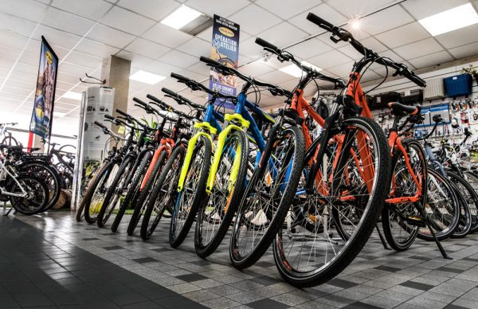
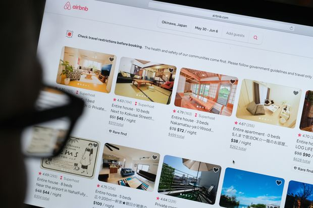

In this project, I cleaned and transformed a comprehensive Nashville housing dataset in SSMS, addressing issues such as missing values,
inconsistencies, and duplicate records. The goal was to prepare the data for deeper analysis, making it more reliable for future
insights related to property values, sale trends, and market patterns.

This project was done in MySQL, where I took on the challenge of cleaning a global dataset
on layoffs, transforming raw, incomplete, and inconsistent data into a
structured and actionable resource. This cleanup laid the foundation for
a deeper exploration of the dataset.
In this project, I used MySQL to explore a global layoffs dataset, identifying key trends and patterns in workforce reductions across different industries and time periods through SQL queries.

In this project, I analyzed a bike buyers dataset using Excel. I cleaned and transformed the data for accuracy, explored key patterns with pivot tables,
and designed an interactive dashboard to visualize insights, making trends easier to interpret and supporting data-driven decisions.

An interactive Tableau dashboard analyzing Airbnb listings to reveal pricing and revenue trends across different property sizes.
The project focuses on how data aggregation (sum vs average) can lead to different business insights.
This Tableau project explores housing trends in King County, Washington, through an interactive dashboard designed to uncover how different property features affect sale prices.
It demonstrates both data storytelling and practical insights for buyers, sellers, and investors navigating the real estate market.
In this project, I built an interactive Tableau dashboard that transformed British Airways customer reviews into meaningful visual insights, highlighting patterns in service quality and passenger satisfaction.
The analysis helped identify key drivers of satisfaction and areas for potential service improvement.